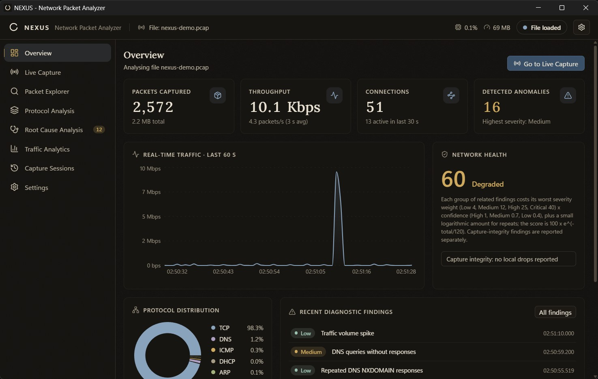
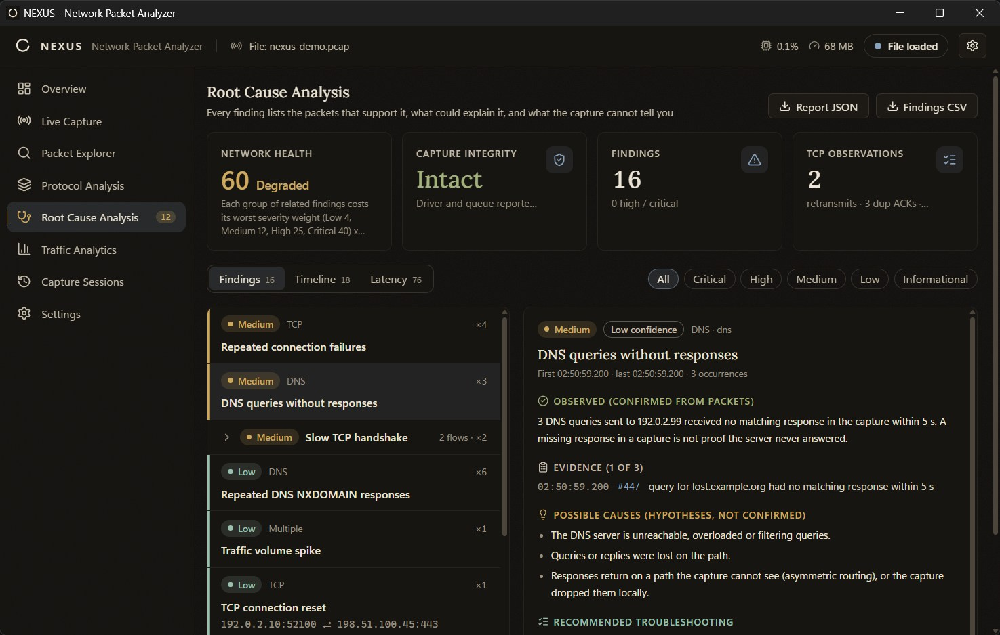
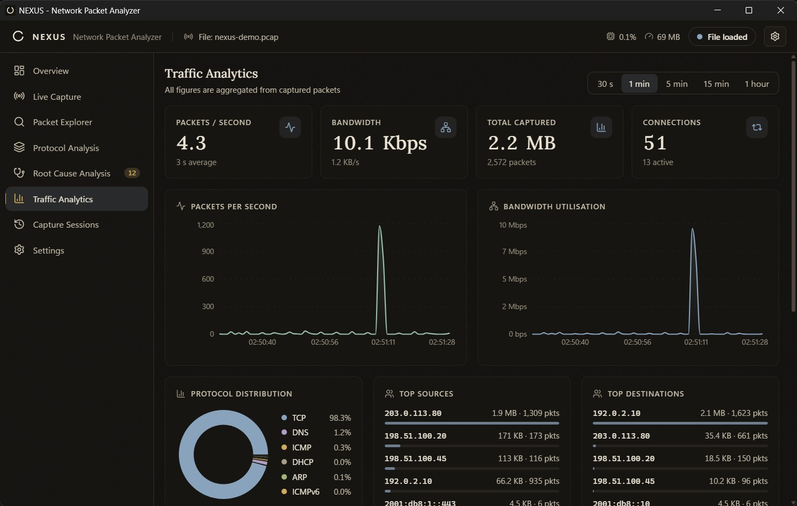
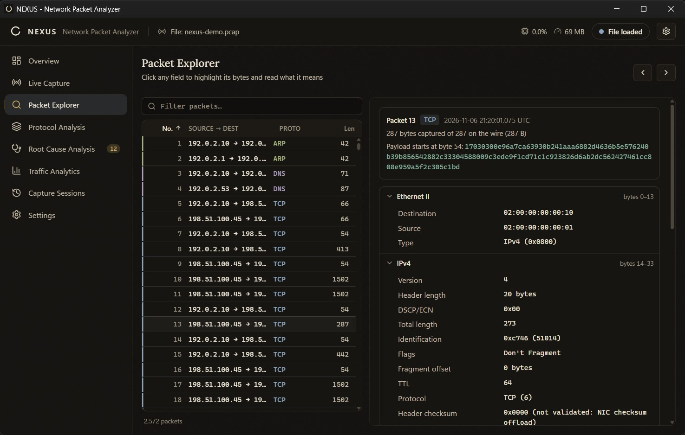

Ethernet II
14 bytes
02 00 00 00 00 10 02 00 00 00 00 01 08 00
- Destination
- 02:00:00:00:00:10
- Source
- 02:00:00:00:00:01
- Carries
- IPv4 (0x0800)
A Windows packet analyzer that shows its evidence.
Packet 13 of the sample capture. In the app every field is clickable and lights up its bytes.
14 bytes
02 00 00 00 00 10 02 00 00 00 00 01 08 00
20 bytes
45 00 01 11 c7 46 40 00 40 06 00 00 c6 33 64 2d c0 00 02 0a
The checksum is shown, not judged: network cards fill it in late, so local captures often hold unfinished ones.
20 bytes
01 bb c3 50 37 65 95 35 35 bd 18 ad 50 18 fa f0 00 00 00 00
233 bytes retained
17 03 03 00 e9 6a 7c a6 39 30 b2 41 aa a6 88 2d
Payload kept is limited (256 bytes by default) and can be masked. NEXUS never decrypts and never hunts for passwords.
Capture on any Npcap interface with a BPF filter. When the driver or NEXUS’s own queue falls behind, the loss is counted apart, so a gap in the capture is never mistaken for a network fault.


3 DNS queries sent to 192.0.2.99 received no matching response in the capture within 5 s. A missing response in a capture is not proof the server never answered. Text produced by NEXUS for the sample capture
Handshake legs, ping and reply, DNS query and response, data and its ACK. Each number is marked as measured. Retransmissions are counts, never proof of loss.


Ethernet, VLAN, IPv4, IPv6, TCP, UDP, ICMP, ARP, DNS and DHCP. Every offset is bounds-checked, and every truncation of every test packet decodes without a crash.
Version 0.1.0 is a first release. These are its edges.
A 3.6 MB per-user installer, no administrator rights needed. It is unsigned, so Windows will ask you to confirm.
Tested with 125 automated tests, 4 of them on real Npcap, covering about 90% of backend lines. The verification report lists what was not tested.
Tell me what broke, what was unclear, or what is missing. I can reply only if you leave an email.
Messages go to a private database and are used only to reply. This site runs no analytics; the hosts keep ordinary request logs.